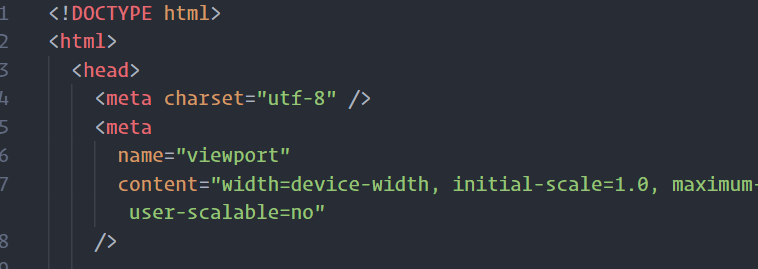

王晓璐
当我们从0开始启动一个前端项目时
首先要做的是技术选型
流行前端库的2018年npm下载量对比图
图片来源：
A Recap of Frontend Development in 2018
完成技术选型后，就要考虑怎么开始
二话不说，先写页面
先搭脚手架，打好项目根基
徒手搭建项目框架、编写自动化构建任务
选择现有的、合适的脚手架
只是想开发一款普通的webApp，或者开发浏览器扩展，或者其他各种，你可以到yeoman上看看有没有适合你需求的脚手架
自动化构建任务举例
function styles() {
return src('app/styles/**/*.scss')
.pipe(
$.sass.sync().on('error', $.sass.logError) // //使用sass处理
)
.pipe($.postcss([autoprefixer()]))
.pipe($.if(!isProd, $.sourcemaps.write()))
.pipe(dest('.tmp/styles'))
.pipe(server.reload({ stream: true }));
}
function scripts() {
return src('app/scripts/**/*.js')
.pipe($.plumber()) // gulp-plumber 一个专门为gulp而生的错误处理库
.pipe($.babel())
.pipe($.if(!isProd, $.sourcemaps.write('.')))
.pipe(dest('.tmp/scripts'))
.pipe(server.reload({ stream: true }));
}
function html() {
return src('app/**/*.html')
.pipe(
$.fileInclude({
prefix: '@', //变量前缀 @include
basepath: 'app/_include', //引用文件路径
indent: true //保留文件的缩进
})
)
.pipe(
$.inlineSource({
rootpath: path.resolve('.tmp'),
compress: false
})
)
.pipe($.useref({ searchPath: ['.tmp', 'app', '.'] }))
.pipe($.if(/\.js$/, $.uglify({ compress: { drop_console: true } })))
.pipe($.if(/\.css$/, $.postcss([cssnano({ safe: true, autoprefixer: false })])))
.pipe(
$.if(
/\.html$/,
$.htmlmin({
collapseWhitespace: true,
minifyCSS: true,
minifyJS: { compress: { drop_console: true } },
processConditionalComments: true,
removeComments: true,
removeEmptyAttributes: true,
removeScriptTypeAttributes: true,
removeStyleLinkTypeAttributes: true
})
)
)
.pipe(dest('dist'));
}
选择好了脚手架，前期工作还不算完
我们还要进行项目结构的设计和安排
可能涉及到个人的编程习惯，但有一些又需要团队配合和遵守
对代码格式化的统一要求
时刻不忘美化自己的工作环境
选择漂亮的字体和颜色高亮
用彩虹色标记缩进